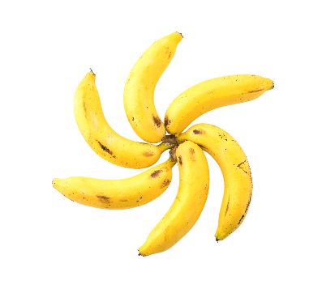
| Texto explicativo | Foto de como ela era antigamente |
| Sua origem é o Sudeste Asiático, de regiões da Malásia, Indonésia e Filipinas, onde muitas bananeiras selvagens ainda crescem. Viajantes a levaram de lá para a Índia, onde é mencionada em escritas budistas datadas por volta de 600 a.C. Em passagem pela Índia com seu exército, Alexandre o Grande da Macedônia viu extensos bananais em produção e provou seus frutos pela primeira vez. É dado a ele o crédito de levar a banana para o ocidente aproximadamente em 300 a.C. A China tinha plantações de banana no século 2 d.C. Elas cresciam apenas na região sul do país, foram consideradas exóticas e não se tornaram populares entre os chineses até o século 20. | 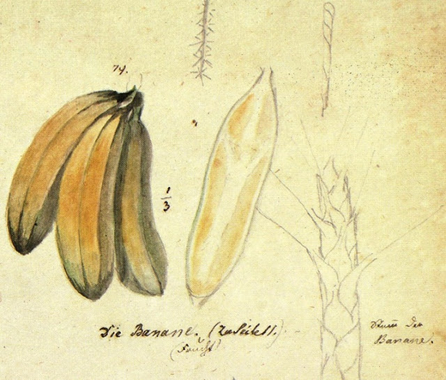 |
Plantio |
Época |
|
|
Explicações sobre a floração da banana |
Foto das flores da banana |
| A floração da bananeira é um processo fundamental no ciclo da planta, marcando a transição da fase vegetativa para a reprodutiva. Geralmente ocorre entre 7 e 9 meses após o plantio, embora esse tempo possa variar conforme a variedade cultivada e as condições climáticas. O pseudocaule da bananeira emite o botão floral, conhecido como “coração da banana”, que vai se abrindo gradualmente e revelando brácteas coloridas que protegem as flores. | 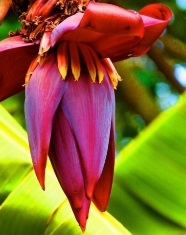 |
|
Banana nanica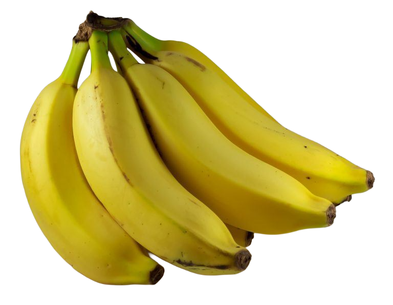
|
Banana maçã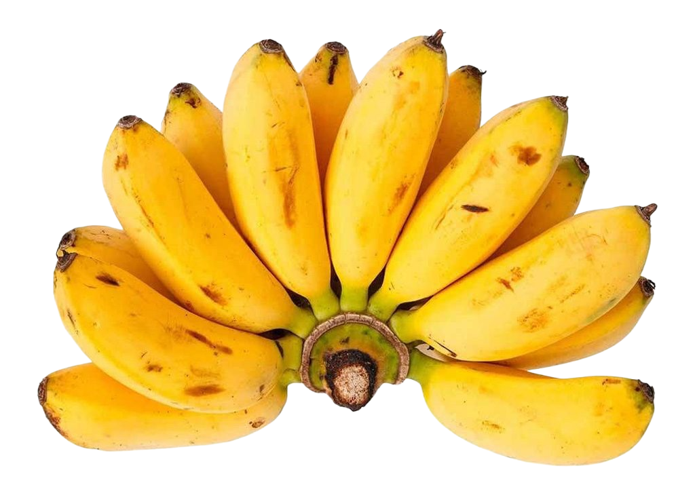
|
Banana prata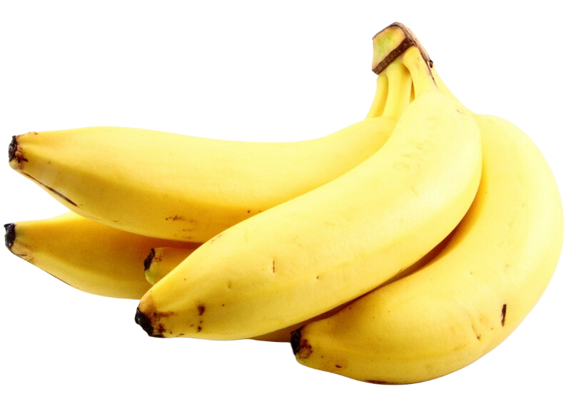
|
Banana ouro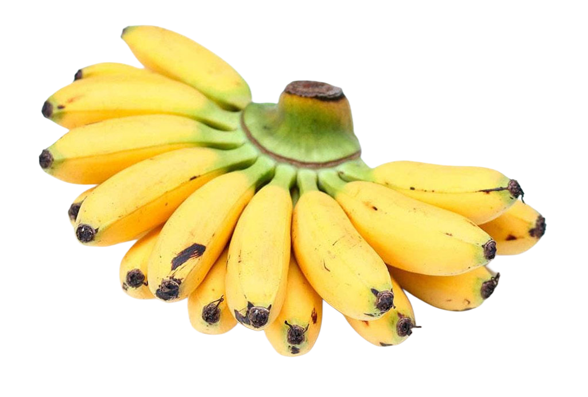
|
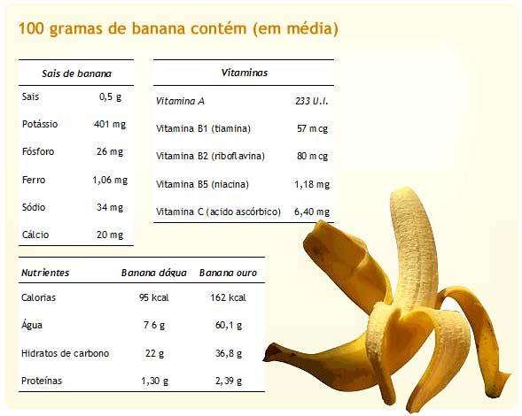
Beneficios Gerais |
|
|
|
| Nutriente | Função Principal |
| Potássio | Regula pressão arterial e função muscular |
| Magnésio | Relaxamento muscular e combate à ansiedade |
| Fibras | Regulação intestinal e controle do apetite |
| Vitamina B6 | Produção de neurotransmissores e energia |
| Vitamina C | Fortalece imunidade e combate radicais livres |
| Triptofano/Serotonina | Melhora humor e qualidade do sono |
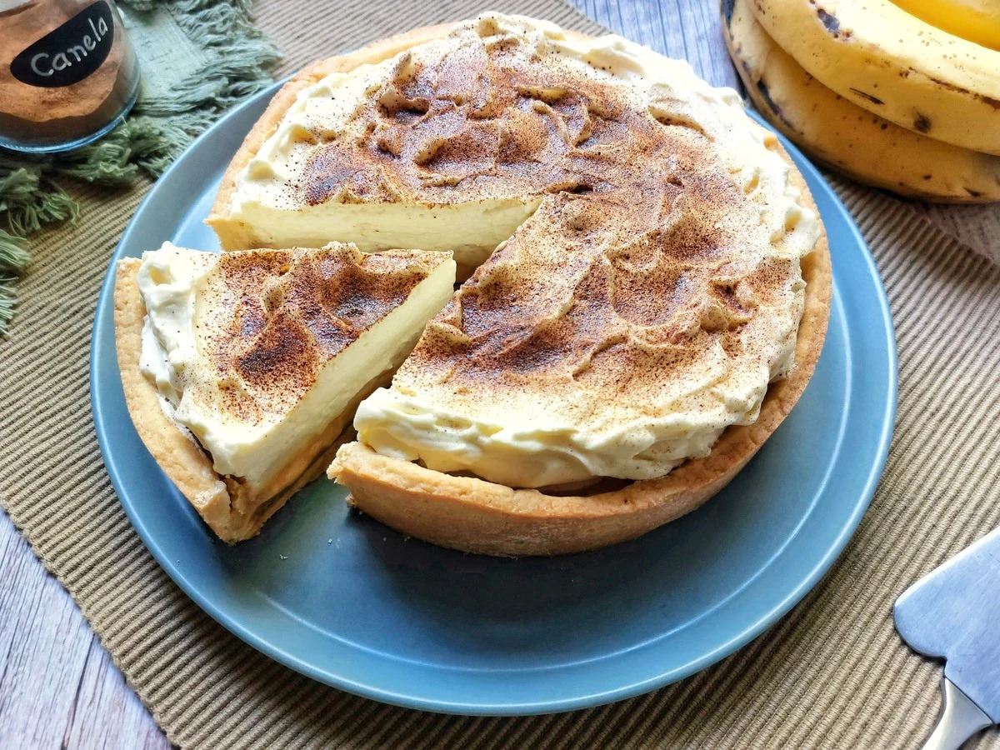
ingredientes da massa |
ingredientes do recheio |
|
|
informações nutricionais |
||||
649.8 Calorias |
10.4g Proteinas |
15.3g Gorduras |
115.7 Carboidratos |
|
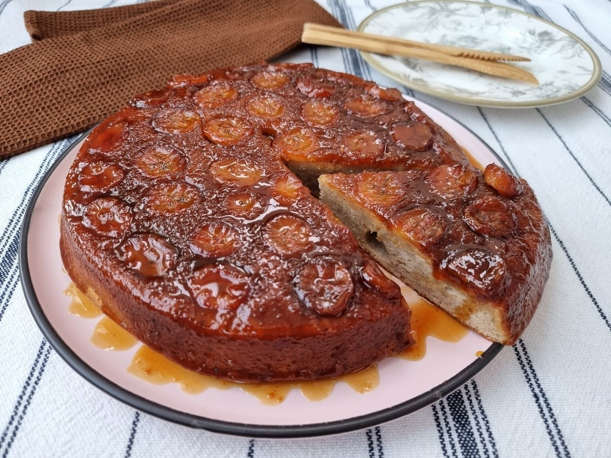
ingredientes da massa |
ingredientes da calda |
|
|
informações nutricionais |
||||
254.9 Calorias |
3.5g Proteinas |
9.4g Gorduras |
40.9g Carboidratos |
|
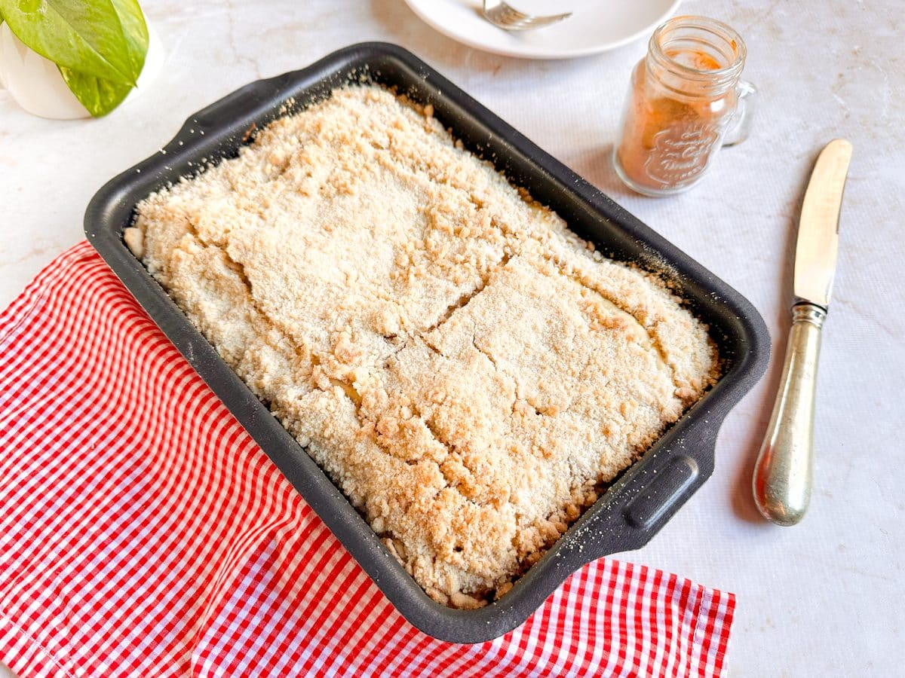
ingredientes da massa |
ingredientes da farofa |
|
|
informações nutricionais |
||||
314.9 Calorias |
5.7g Proteinas |
5.8g Gorduras |
59.1g Carboidratos |
|
{kind=link}